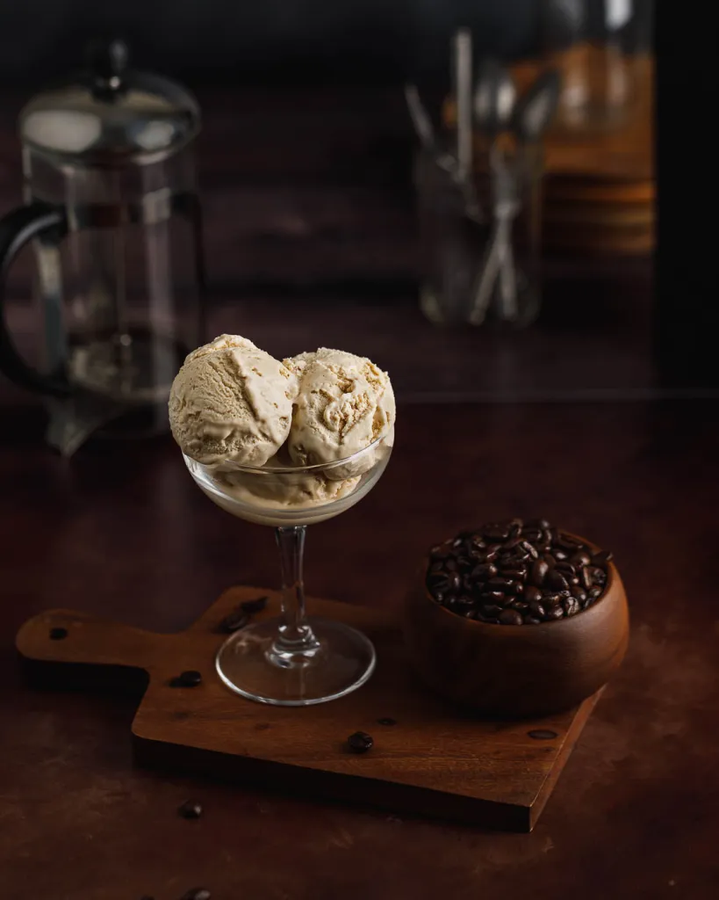

Coffee Ice Cream

Rewarding your sacrifice
You've spent the entire week strictly following your personal health regimen.
You turned and walked away when the pastry, chip and beer sections were
flirting and calling like sirens.
The struggle to defeat your impulsive desire has its own strengthening
benefit, and celebrating your display of will by enjoying a bowl of organic
coffee ice cream can be all that is needed to reset and prepare for another
week of discipline.
Ingredients
- 2 cups Organic Half & Half
- 1 cup Organic Heavy Cream
- 1/4 teaspoon Sea Salt
- 4 Organic Free Range Egg Yolks
- 1 cup Granulated Organic Cane Sugar
- 1 1/2 tablespoons High Quality Organic Caffeinated Instant Coffee
- 1 teaspoon Organic Pure Vanilla Extract
Steps
-
Warm half and half, sugar and salt in a medium saucepan over medium heat,
whisking to dissolve sugar.
-
Beat egg yolks in a small mixing bowl, add ½ cup of the warm mixture to the
egg yolks and whisk to combine. Then add that mixture to the half and half
on the stovetop.
- Whisk in coffee granulates until dissolved.
-
Cook over medium-low heat stirring constantly until the mixture thickens
slightly, just barely sticking to the back of a spatula or until it reaches
170 degrees F.
-
Place the heavy cream into a bowl with a fine mesh strainer on top of the
bowl.
-
Strain the custard into the heavy cream. Discard what is left on the
strainer.
- Add vanilla extract, stir to combine.
-
Transfer to an airtight container and cool completely in the fridge
(preferably overnight).
-
Pour mixture into an ice cream maker and churn until frozen (about 30-40
minutes).
-
Transfer to an airtight container and freeze completely, about 4 hours.